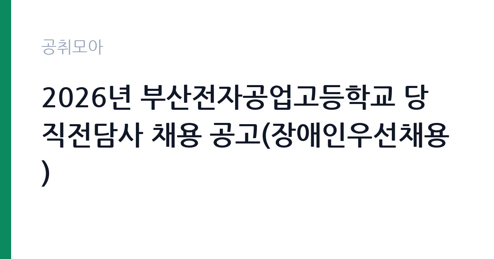

[교육청] 2026년 부산전자공업고등학교 당직전담사 채용 공고(장애인우선채용)
부산광역시교육청 부산광역시교육청학교행정지원본부 학교채용지원팀 · 부산 · 마감 2026-11-09 (D-5) · 출처 나라일터

한눈에 보는 모집 조건
| 기관 | 부산광역시교육청 부산광역시교육청학교행정지원본부 학교채용지원팀 |
|---|---|
| 공고명 | 2026년 부산전자공업고등학교 당직전담사 채용 공고(장애인우선채용) |
| 고용형태 | 공무직 |
| 근무지 | 부산 |
| 게시일 | 2026-11-04 |
| 마감일 | 2026-11-09 (D-5) |
지원자격, 이렇게 읽으세요
- 당직전담사 1명
- 접수 ~2026-11-09 마감
- 세부 조건은 원문 공고문 확인
공무직 근로자는 공무원이 아니라 근로기준법이 적용되는 근로자이지만 기간의 정함이 없는 무기계약으로 채용되는 경우가 많아 정년까지 근무가 가능합니다. 채용은 공무원 시험과 달리 기관의 자체 전형으로 진행되고 인사 규정과 임금표를 적용받습니다. 이번 공고는 부산광역시교육청 부산광역시교육청학교행정지원본부 학교채용지원팀에서 직접 진행하는 자체 전형으로, 응시자격과 제출서류는 공고문에 항목별로 제시됩니다. 이 공고는 장애인우선채용으로, 「장애인고용촉진 및 직업재활법」 제2조에 따른 장애인이 응시 자격에 해당합니다. 채용기간은 2026년 12월 1일부터 정년까지로 적혀 있어 사실상 무기계약에 준하는 신분입니다. 접수는 2026년 11월 4일부터 9일 18시까지 이메일·우편·방문으로 받고, 접수처는 부산진구 엄광로182번길 49 학교행정지원본부 2층 채용지원팀입니다. 경력증명서와 자격증 사본을 내지 않으면 서류심사 점수에 반영되지 않는다고 명시되어 있으므로 해당 서류는 반드시 챙기십시오. 같은 학교행정지원본부의 학교별 공고에 중복 지원할 수 없어 1개 학교만 선택해야 합니다. 서류는 접수 마감 이후 보완이 되지 않으므로 자격 요건과 증빙 서류를 마감 전에 모두 갖춰야 합니다. 공고문에 명시된 우대 사항은 해당 여부를 확인해 증빙을 첨부해야 가점이 반영됩니다. 학력이나 전공 요건이 없는 공고라도 제출서류 목록은 그대로 적용되므로 서류 준비 부담은 줄지 않습니다. 이 공고 원문에 적힌 응시 조건 문구는 '경력증명서, 자격증사본 미제출 시 서류심사 점수에 반영되지 않습니다.'입니다. 문구를 그대로 읽고 본인 해당 여부를 하나씩 표시해 두면 서류 단계에서 탈락하는 일을 줄일 수 있습니다.
이 공고의 포인트
이 공고의 첫 번째 포인트는 고용 형태입니다. 무기계약으로 채용되면 정년까지 근무가 가능해 재계약 부담이 없습니다. 반대로 기간제로 채용되는 공고라면 계약 기간을 먼저 확인해야 합니다. 두 번째는 업무 범위가 명확하다는 점입니다. 학교 당직·시설 관리 직무로 채용되므로 배치 이후 담당 업무가 크게 흔들리지 않습니다. 세 번째는 근무지입니다. 부산 지역 근무로 수도권 공고에 비해 지원자 분포가 넓지 않아 상대적으로 경쟁이 분산되는 경우가 있습니다. 자격 요건이 까다롭지 않은 대신 지원자가 몰리는 유형의 공고입니다. 다만 선발 인원이 1명으로 많지 않아 자격을 갖춘 지원자가 몰리면 경쟁률이 높아질 수 있습니다.
전형은 어떻게 진행되나
채용 절차는 공고문에 안내된 순서대로 진행되며, 서류 접수 마감 후에는 추가 접수나 서류 보완이 이뤄지지 않는 것이 원칙입니다. 서류심사에서는 응시자격과 제출서류의 형식 요건을 기계적으로 확인하므로, 경력 증명서의 기간과 직무 내용이 공고의 요건과 정확히 맞아야 합니다. 면접은 지원자 수에 따라 집단면접과 개별면접으로 나뉘고, 직무 관련 질문과 상황 대응 질문이 함께 나옵니다. 합격자 발표는 개별 통보 또는 홈페이지 게시로 이뤄지며 이후 임용 절차가 진행됩니다. 제출서류 원본은 최종 단계에서 다시 요구되는 경우가 있어 사본과 함께 보관하십시오.
원문에서 확인한 전형 방식
[2026년 부산전자공업고등학교 당직전담사 채용 공고(장애인우선채용)] 1. 채용분야 및 인원: 당직전담사 1명 2. 채용기간: 2026. 12. 1.~(정년) 3. 근무시간: (격일제) 평일16:30~08:30, 주말08:30~08:30 4. 원서접수 ○접수기간: 2026. 11. 4.(수)~2026. 11. 9.(월) 18:00 ○접수방법: 온라인(이메일), 우편, 방문 ○접수장소: 부산광역시 부산진구 엄광로182번길 49 학교행정지원본부 2층 채용지원팀 (접수 다음날까지 접수 완료 문자를 받지 못하신 경우, 602-1940으로 반드시 연락 바랍니다.) 5. 경력증명서, 자격증사본 미제출 시 서류심사 점수에 반영되지 않습니다. 6. 학교행정지원본부의 학교별 채용 공고에 중복 지원 불가합니다. (1개 학교만 지원 가능) 7. 응시자격: 「장애인고용촉진및직업재활법」제2조에 따른 장애인 자세한 사항은 [붙임] 파일을 참고해 주시기 바라며 업무 및 근무 관련 문의는 부산전자공업고등학교 행정실(051-606-0208), 공고 관련 문의는 학교행정지원본부(051-602-1936, 1940)로 연락바랍니다.
이런 분께 추천해요
- 장애인고용촉진법상 장애인에 해당하는 분
- 격일제 야간 근무를 지속할 수 있는 분
- 시설 순찰과 출입 통제 경험이 있는 분
지원 전 체크리스트
- 응시자격 요건과 경력 기준을 충족하는가 — 경력은 증명서로 입증해야 합니다
- 무기계약 여부와 정년 기준을 공고문에서 확인했는가
- 제출서류 목록을 모두 준비했는가 — 누락 시 서류 단계에서 탈락합니다
- 접수 마감 2026-11-09 이전에 접수 방식을 확인해 제출했는가
모집 일정과 제출 타이밍
2026-11-04에 공고가 올라왔고 접수는 2026-11-09까지입니다. 남은 기간은 5일이며, 이 기간에 자격증 사본과 경력증명서, 주민등록등본 같은 기본 서류를 모두 준비해야 합니다. 경력증명서는 발급에 며칠이 걸리는 경우가 있으니 가장 먼저 신청하십시오. 접수는 온라인과 우편·방문으로 나뉘는 경우가 많고, 우편 접수는 도착 기준으로 판정되므로 마감일 소인만 믿으면 안 됩니다. 면접 일정은 서류 발표 후 개별 통보되므로 제출 후에도 연락을 받을 수 있도록 유지해야 합니다. 임용 예정일이 빠르게 잡히는 공고이므로 현재 일정과 겹치지 않는지 미리 확인하십시오. 부산 근무지는 지역 안에서도 이동 시간이 길어 근무지 위치를 구체적으로 확인하는 것이 좋습니다. 마감까지 일주일 안팎이 남아 서류 준비와 증빙 발급을 병행해야 합니다. 선발 인원이 한두 명 수준이라 지원자 개개인의 서류 완성도가 그대로 평가에 반영됩니다.
직무 이해하기: 교육청
당직전담사는 학교가 비어 있는 시간대에 교사를 지키고 시설 이상을 확인하는 업무를 맡습니다. 부산전자공업고등학교 공고 기준 근무시간은 격일제로, 평일은 16시 30분부터 다음 날 08시 30분까지, 주말은 08시 30분부터 다음 날 08시 30분까지입니다. 순찰로 교실과 특별실의 창문·출입문 잠금 상태를 확인하고, 누수·누전·화재 징후를 점검합니다. 방문자와 차량 출입을 통제하고, 야간에 울리는 경보나 민원 전화에 대응합니다. 이상이 발견되면 학교 관리자와 관할 부서에 보고하고 기록을 남깁니다. 업무 매뉴얼과 지침이 문서로 정리되어 있어 절차를 익히면 반복 업무는 빠르게 손에 붙습니다.
자기소개서 작성 팁
지원서는 야간·격일 근무를 지속할 수 있다는 점을 먼저 보여주는 것이 핵심입니다. 시설 관리나 경비, 순찰 업무를 맡았던 경험을 기간과 함께 쓰고, 이상 상황을 발견해 조치한 사례를 한 가지 이상 넣으십시오. 장애인우선채용 전형이라는 점을 이해하고 지원했다는 점을 밝히면 성실성이 드러납니다. 접수 다음 날까지 완료 문자를 받지 못하면 반드시 연락하라는 안내가 있으니, 연락 가능한 번호를 정확히 기재하십시오. 직무 경험이 많지 않다면 경험의 양보다 과정을 구체적으로 쓰는 편이 낫습니다. 어떤 상황에서 무엇을 판단했고 어떤 결과가 나왔는지 순서대로 서술하면 신뢰가 생깁니다. 지원 동기와 기여 방안은 한 문단씩 짧게 유지하고, 가장 자신 있는 경험에 분량을 몰아주십시오. 마지막 문장은 포부보다 구체적인 실행 계획으로 끝내는 것이 좋습니다.
면접 준비 포인트
면접에서는 야간 근무 적응과 상황 대응을 확인합니다. 순찰 중 이상을 발견했을 때 누구에게 어떤 순서로 보고할지, 야간에 외부인이 출입을 요구하면 어떻게 대응할지 묻습니다. 격일제 근무라는 조건을 이해하고 있는지도 중요한 판단 기준입니다. 시설관리나 경비 경험이 있다면 순찰 기록을 어떻게 남겼는지 구체적으로 답하십시오. 답변은 상황, 판단, 조치의 순서로 정리하면 전달이 분명해집니다. 모르는 질문에는 모른다고 밝히고 확인 방법을 제시하는 편이 억지 답변보다 낫습니다. 마지막에는 근무 의사와 함께 2026-11-09 이후 일정에 언제든 응할 수 있다는 점을 전달하십시오. 지원 기관의 최근 사업이나 조직 개편 내용을 확인해 두면 지원 동기 질문에서 차이가 납니다.
급여·근무조건 읽는 법
학교 당직전담사는 교육공무직(또는 학교 자체 계약) 신분으로 채용되며, 보수는 교육청의 교육공무직 임금 기준과 경력 인정에 따라 정해집니다. 이 공고는 채용기간이 정년까지로 적혀 있어 무기계약 형태이고, 야간·휴일 근무수당이 붙어 기본급보다 실수령액이 높아지는 구조입니다. 구체적인 금액과 수당 항목은 공고문 처우 부분에서 확인해야 하며, 확인되지 않은 수치는 이 글에서 제시하지 않습니다. 2026년 적용 최저임금은 시급 10,320원, 월 환산 2,156,880원(주 40시간·209시간 기준)입니다. 고용노동부 고시 제2025-47호로 확정된 금액입니다. 공고문에 금액이 제시되지 않은 항목은 원문 보수표나 처우 설명에서 확인해야 하며 확인되지 않은 수치는 쓰지 않는 것이 원칙입니다. 비교할 때는 월 급여뿐 아니라 상여·명절휴가비·복지포인트·초과근무수당까지 포함한 연간 총액으로 계산하십시오. 기간제라면 계약 기간 동안의 총액을, 무기계약이라면 호봉 상승과 정년까지의 누적 소득을 기준으로 판단하는 편이 정확합니다.
자주 묻는 질문
- 선발 인원은 몇 명인가요?
공고문 기준 1명입니다. 직종별로 인원이 나뉘는 경우가 있으니 모집분야 항목을 함께 확인하십시오. - 근무지는 어디인가요?
부산 지역의 부산광역시교육청 부산광역시교육청학교행정지원본부 학교채용지원팀 소속 근무지입니다. 세부 주소와 출퇴근 조건은 원문 공고문에서 확인할 수 있습니다. - 보수는 얼마인가요?
채용 신분(공무직)과 기관 임금 규정에 따라 정해지며 구체적인 금액은 공고문 처우 항목에 제시됩니다. 금액이 공개되지 않은 경우에는 원문의 보수표를 확인하십시오.
함께 보면 좋은 공고
[교육청] 서울당중초등학교 특수교육실무사 대체직원 채용계획 공고 — 마감 2026-11-09[교육청] 서울개명초등학교 사서 대체직원 채용계획 공고 — 마감 2026-11-09[교육청] 서울영림초등학교 교육실무사[늘봄] 기간제근로자 채용계획 공고 — 마감 2026-11-09출처: 나라일터 공개정보를 바탕으로 공취모아가 정리한 안내글입니다. 모집 조건·일정은 변경될 수 있으니 지원 전 반드시 원문 공고문을 확인하세요. 본 글은 정보 제공용이며 합격을 보장하지 않습니다.